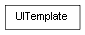

class cymel.ui.uitemplate.UITemplate¶

-
class
cymel.ui.uitemplate.UITemplate(name=None, force=False, **kwargs)¶ ベースクラス:
objectmel UI の uiTemplate ラッパークラス。
withで setUITemplate が行える。import maya.cmds as cmds import cymel.ui as cmu template = cmu.UITemplate('ExampleTemplate', force=True) template.define(cmds.button, width=100, height=40, align='left') template.define(cmds.frameLayout, borderVisible=True, labelVisible=False) wnd = cmu.Window() with template: cmu.FrameLayout() cmu.Button() wnd.show()
初期化。
パラメータ: Methods:
__init__([name, force])初期化。 define(uiType, **kwargs)テンプレートにUIオプション値を設定する。 delete()このテンプレートを削除する。 exists(name)name()pop()push()Methods Details:
-
__init__(name=None, force=False, **kwargs)¶ 初期化。
パラメータ:
-
define(uiType, **kwargs)¶ テンプレートにUIオプション値を設定する。
uiTemplate -defineTemplate 相当の機能
パラメータ: - uiType -- cmds の ui 関数、又はオブジェクト。
- kwargs -- uiType関数に渡すテンプレートにするオプション引数
-
delete()¶ このテンプレートを削除する。
-
classmethod
exists(name)¶
-
name()¶
-
pop()¶
-
push()¶
-